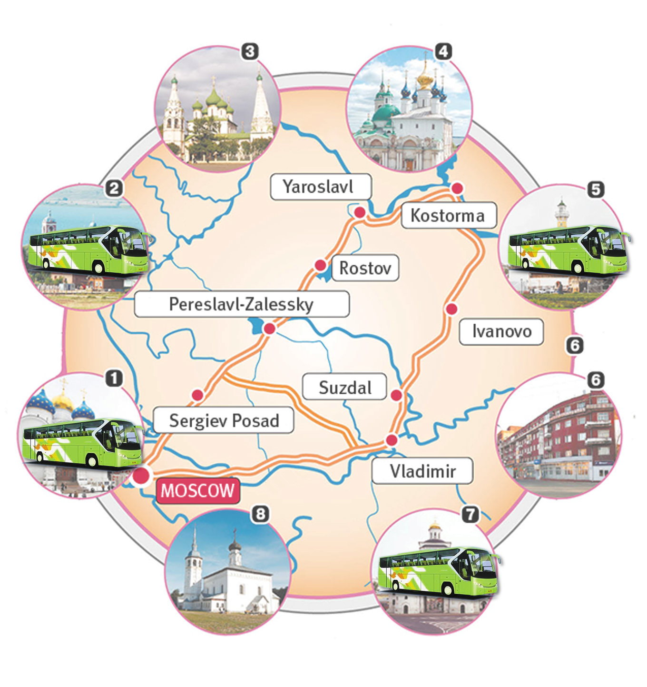

The Golden Ring of Russia

The Golden Ring of Russia is a tourist route that was specifically
developed in the late 1960s uniting several mediaeval Russian cities
located to the north-east of Moscow. Today it is the main and most
popular tourist route around provincial cities of central European
Russia. The route consists of eight principal cities and several
additional, unofficial secondary cities located in the Ivanovo,
Kostroma, Moscow, Vladimir and Yaroslavl regions.
Golden Ring Route incorporates cities in the region historically
known as Zalesye, which literally means ‘beyond the forest’ in
reference to its location from Kiev - then the capital of the Rus
state (Kievan Rus). Once considered a backwater of Rus it later
developed into the powerful Suzdal Principality and then the
Vladimir Grand Principality, which eventually eclipsed Kiev as the
seat of the most senior Rus prince. Vladimir would remain the
capital of Rus until it was in turn eclipsed by Moscow.
The main attractions of the cities on the route are the old
buildings that have been preserved here, especially the monasteries
and churches, and there are even several UNESCO World Heritage
Sites. In addition to this, the cities are very provincial and
located among the beautiful Russian countryside. Therefore the
Golden Ring preserves a perfect antidote to the hustle and bustle of
Moscow, so it is definitely worth visiting at least one Golden Ring
city if you are in Moscow for more than a couple of days.
The Golden Ring of Russia is the main and most popular tourist route
around provincial cities of central European Russia. There is no
officially defined list of all the cities included on the route, but
you can find a list of the cities frequently included on our Golden
Ring Cities page. In any case, there are certainly a few cities
which you should see and some you can skip.